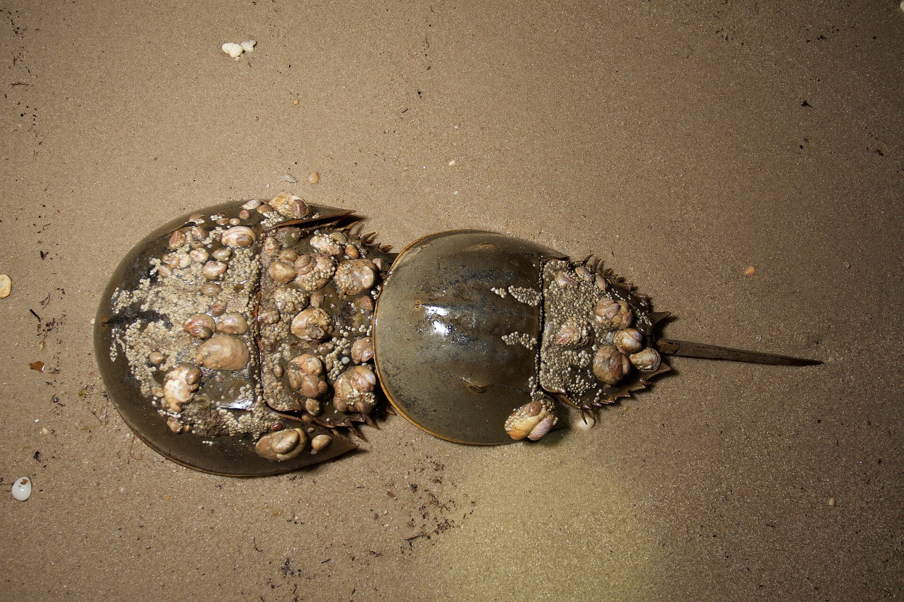
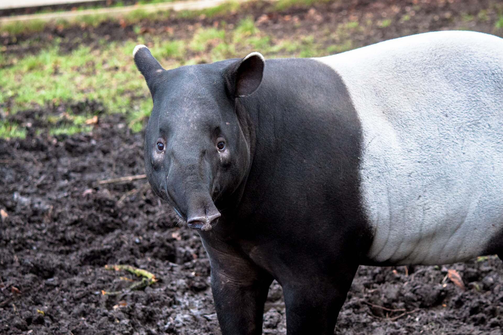

Japan with
Japan with
Ask what animal inspired a Pokémon and the internet will answer with absolute confidence. Pikachu is a pika. Caterpie is one particular swallowtail larva. Kabuto is a horseshoe crab. Drowzee is a tapir. Some of those comparisons are useful. The certainty often is not.
The franchise began with attention to small living things. Creator Satoshi Tajiri described childhood days around Machida searching fields, streams and ponds for insects and crayfish. The cable connecting two Game Boys helped turn collecting into exchange: creatures could move from one child’s machine to another. Yet that origin does not mean every design has one discoverable species label. Designers compress shapes, wordplay, game mechanics and old stories into a readable sprite.
The surprise inside Pikachu’s cheeks
The official Pokédex categorizes Pikachu as the “Mouse Pokémon.” That is canon classification, but it is not a complete production history. In The Pokémon Company’s interview with the original creators, designer Atsuko Nishida said the first request was simply for a cute Electric-type that evolved twice. She made an early round, daifuku-like creature, then gave it an animal form.
Nishida was fascinated by squirrels. She imagined electricity stored in cheek pouches as a squirrel stores food and gave the tail a shape that could signal electricity. Koji Nishino added that Rattata—the unmistakable mouse—already existed, and Pikachu was not originally intended to look especially mouse-like.
This is also why the popular “Pikachu comes from a pika” claim is weak. A pika is a real mountain-dwelling lagomorph, and the name looks tempting in English. But the Japanese name combines pika-pika, a sparkling sound-symbolic expression, with chū, the squeak associated with a mouse. The documented designer testimony points to squirrel behavior, not the animal called a pika.
Poliwag: anatomy turned into an icon
Poliwag is officially the Tadpole Pokémon. Its most memorable mark—a black belly spiral—is more than decorative shorthand. Many tadpoles have translucent or partly transparent abdominal tissue through which the long, coiled intestine can be visible. Herbivorous and omnivorous larvae need substantial gut length to process their food; coiling packages it into a small body.
The comparison is biologically strong, but wording matters. The official Pokédex supplies “Tadpole” and descriptions of thin skin through which innards can be seen. That supports the anatomical connection. It does not identify a single frog species as the exclusive model. Poliwag turns a general larval feature into a bold symbol readable on a tiny Game Boy screen.
Look closely, responsibly
If you watch tadpoles in Japan, observe from the bank and follow local rules. Amphibians are declining worldwide, and eggs or larvae should not be removed merely for a photograph. A pond is habitat, not a free Pokémon reference shelf.
Kabuto: a “fossil” that is still alive
Kabuto is revived from a Dome Fossil in the games. The official Pokédex calls it the Shellfish Pokémon and describes eyes on its back, a hard shell and molting. Its domed shield and long-established association with ancient seas make the horseshoe-crab comparison unusually persuasive.
Real horseshoe crabs are not crabs. They are marine chelicerates, more closely related to arachnids than true crabs. Their lineage reaches back hundreds of millions of years, which explains the “living fossil” label. Smithsonian’s National Zoo notes that the body plan has changed little over roughly 200 million years, though living species are not literally unchanged prehistoric specimens.

There is a productive mismatch here too. Kabuto’s English category says “Shellfish,” but a modern biological classification would not place a horseshoe crab among shellfish in any precise taxonomic sense. Pokémon categories are flavorful labels, not zoological diagnoses. The resemblance is strong; a published statement that one exact species was the sole design model has not been located.
Drowzee: where animal becomes folklore

Drowzee has a short trunk, eats dreams in Pokédex descriptions and is categorized as the Hypnosis Pokémon. Calling it simply “a tapir” misses the Japanese layer. Baku can mean the real tapir, but it also names a supernatural dream-eater whose image entered Japan from Chinese traditions.
An eighteenth-century Japanese netsuke in the Metropolitan Museum depicts a baku with an elephant’s trunk, ox tail and tiger paws. The museum identifies it as a creature that devours dreams and nightmares. Drowzee’s combination of trunk and dream appetite therefore points not just toward zoology, but toward the word and myth linking a real animal with a composite monster.
This is a strong cultural reading, not a quoted design confession. The distinction makes the result more interesting: one creature can carry an animal silhouette, a Japanese homonym and centuries of supernatural imagery at once.
Four examples, four levels of certainty
| Pokémon | Real-world layer | What the evidence supports |
|---|---|---|
| Pikachu | Squirrel behavior + mouse category | Documented designer testimony and official classification |
| Poliwag | Tadpole with visible coiled gut | Strong official category and anatomy; no single species named |
| Kabuto | Horseshoe-crab body plan | Strong visual and biological comparison; sole model unconfirmed |
| Drowzee | Tapir + dream-eating baku | Interpretive official dream behavior aligns with documented folklore |
Why uncertainty improves the hunt
Pokémon identification is most rewarding when it sends us back to nature without pretending design is forensic evidence. The Japanese squirrel explains a motion and a storage metaphor. Tadpole anatomy explains how a spiral can be literal and graphic. A horseshoe crab complicates the word “crab.” The baku shows that a creature may be borrowed from language and folklore as much as from a zoo.
The common mistake is to reverse the process: find one animal photograph that looks close, then declare the case closed. Similarity can suggest a source, but convergent shapes, artistic simplification and later fan interpretation can all produce convincing matches. Official categories can be playful or deliberately broad. Translated names may add associations that were not present in Japanese.
Use a simple test. First, look for a named creator’s statement. Second, check the official Pokédex category and descriptions across versions. Third, compare the claimed biological trait with a museum, zoo or scientific source. Finally, label what remains as interpretation. “Possibly inspired by” is not disappointing language; it is honest language.
That method reveals Pokémon’s deeper achievement. The monsters are memorable because they are not merely copied animals. They let a child recognize a cheek pouch, gut coil, ancient shell or trunk—and then add electricity, evolution, fossils or dreams. The real world is not hidden behind the fantasy. It is continually being edited inside it.
For another look at how Japanese character design carries emotion and social meaning, continue to why Japan’s kawaii characters are not just cute. If the Japanese names and sound words caught your attention, try free practice with no signup at Japanese Training Lab.
Sources and further reading
- The Pokémon Company — “The Creators of Pikachu”
- The Pokémon Company — official Pikachu press artwork
- The Official Pokémon YouTube channel — Pokémon: Let’s Go trailer
- The Pokémon Company — official Pikachu Pokédex
- The Pokémon Company — National Pokédex
- The Pokémon Company — official Kabuto Pokédex
- American Journal of Play / The Strong — Japanese seasonal play and Pokémon’s insect-collecting roots
- Smithsonian’s National Zoo — horseshoe crab biology
- The Metropolitan Museum of Art — eighteenth-century dream-eating baku netsuke
Official classifications and linked source availability checked November 15, 2026 JST. Pokémon and character names are used editorially for commentary. All character rights remain with their respective owners.

Find the real Japan behind the designs.
Walk Japan with Yuji on TikTok LIVE, then explore, play and learn Japanese with DraMap.
Japan Unfolded is independently edited by Yuji Shimizu, creator of DraMap. The app link is publisher promotion. Assessments of design evidence are editorial judgments; uncertain inspirations are labeled rather than presented as official fact.
Continue: how Dragon Ball’s world became a real destination → · Explore the manga guide →